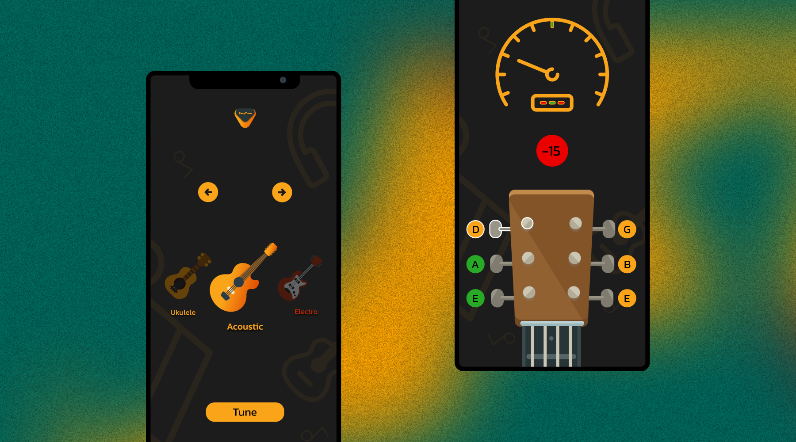

EasyTune
Fine-tuning user experience: The UI/UX design of EasyTune offers a user-friendly interface and intuitive controls for seamlessly customizing and optimizing device performance.
Services:
UI UX Design, Iconography, Prototyping, Wireframing, Logo
About the project
The goal of the project is to design an intuitive and user-friendly mobile app that helps guitar players tune their instruments accurately and quickly. The app will feature a clean and simple interface that allows users to easily select the desired tuning and start tuning their guitar.
The app will use the microphone on the user's device to listen to the guitar's strings and provide real-time feedback on the current pitch. The app will also allow users to select different tuning modes, including standard, drop D, and open tunings.
In addition, the app will provide a visual display of the tuning process, showing users which strings are in tune and which need to be adjusted. The app will also include a reference pitch feature that allows users to compare their tuning to a pre-recorded reference pitch.
The UI/UX design of the app will focus on creating a minimalist and intuitive interface that allows users to quickly and easily tune their guitar. The design will also prioritize clear and concise language to ensure that the app is accessible to users with a range of musical abilities.